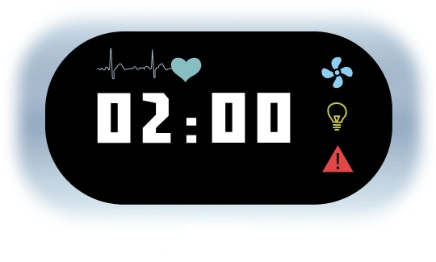

Hey, I’m Ilham
I overthink
things.
I’m a UX designer based in Amsterdam. I talk to people to understand what they need, then turn what I learn into ideas we can try out together.
Explore selected workStart with a messy question.
Start with a messy question.
Selected work

Graduation project · City of Amsterdam
Film van je leven
An app concept that helps young people catch themselves scrolling on autopilot and choose how they want to spend their time.
UX research & concept design
Read case study
Night O’clock
A smart bedside clock concept for winding down at night and waking up to a room that gradually gets brighter.
IoT concept design
Read case studyExperience
2022–2026
BA Communication & Multimedia Design
Amsterdam University of Applied Sciences
Apr–Jul 2024
Design Intern
RMMBR
Jun 2025–Apr 2026
Freelance Learning Developer & Designer
Aug 2025–Jan 2026
Design Intern
Futurewhiz
Feb–Jul 2026
Graduation Intern
City of Amsterdam